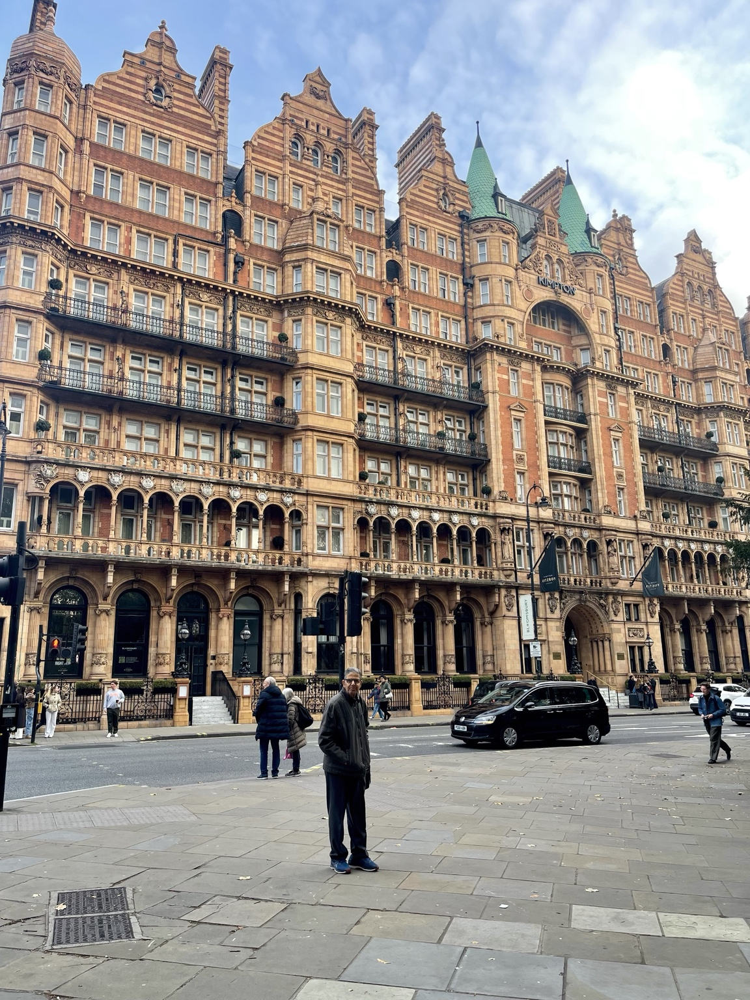
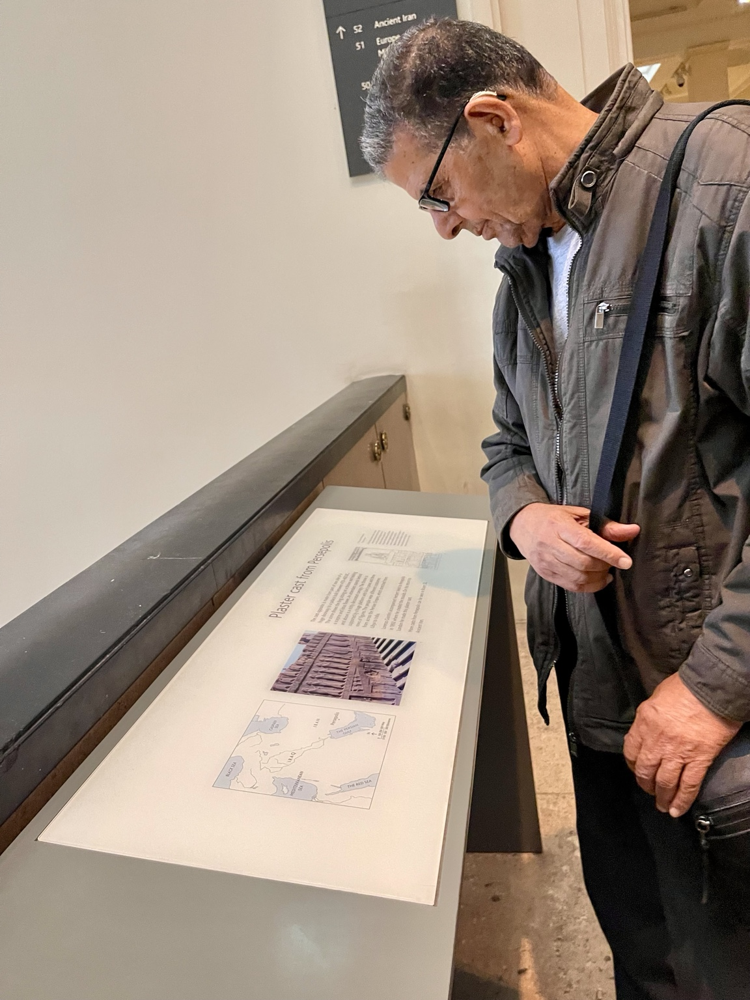
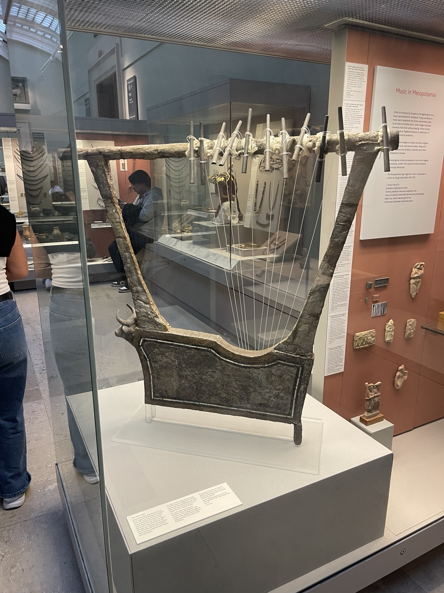
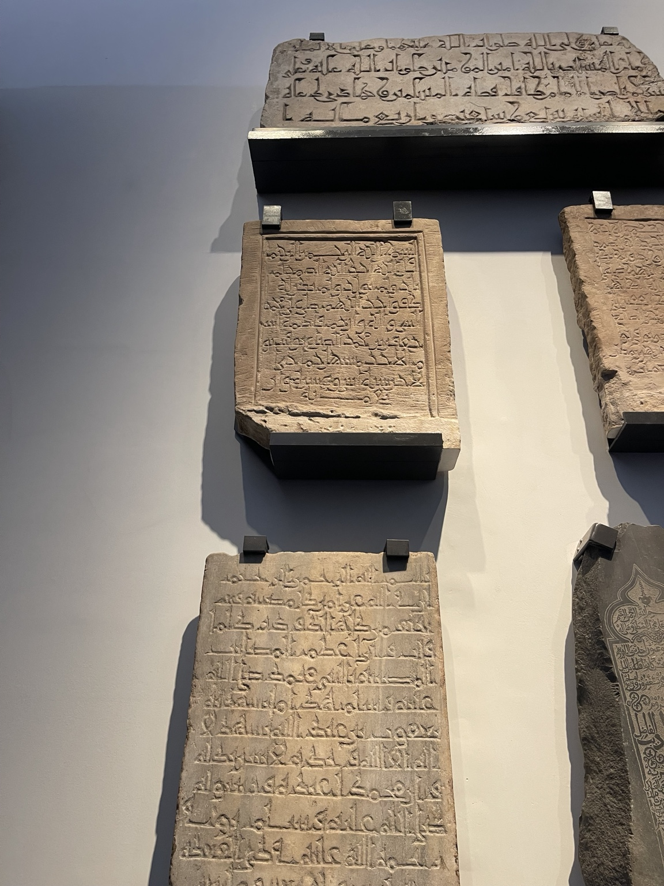
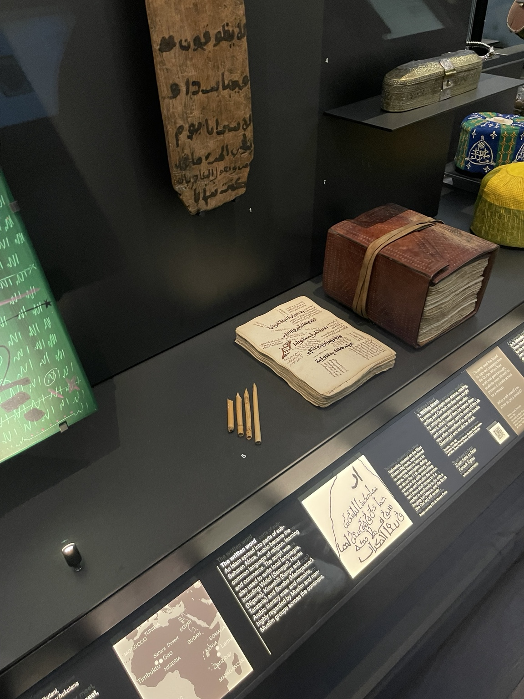
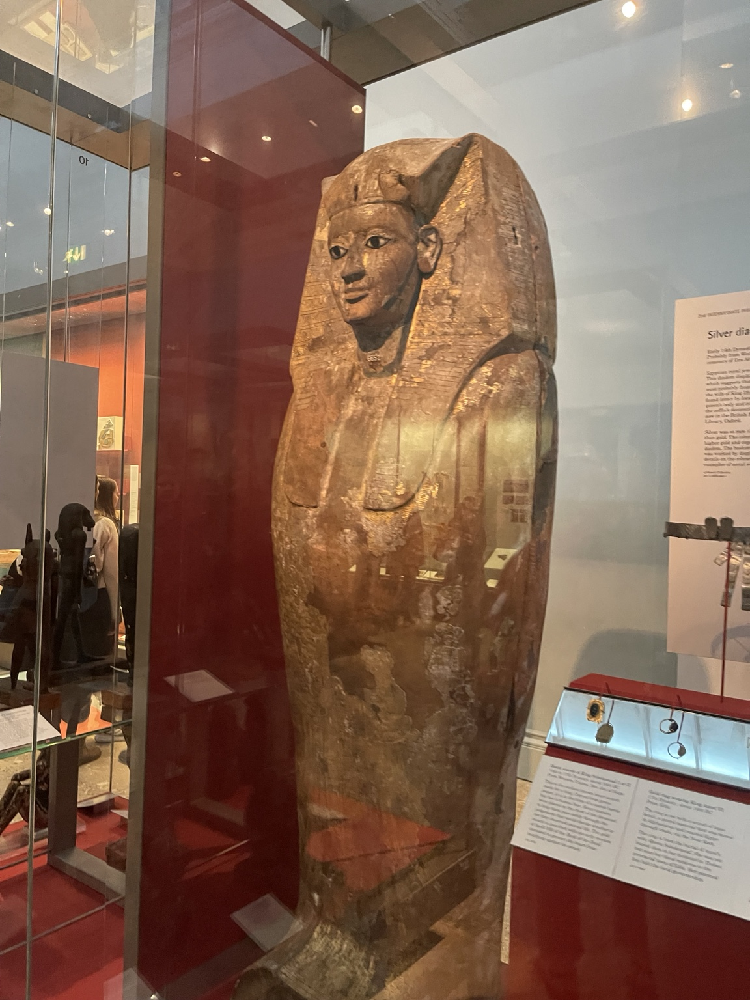

Stories / A museum visit
A day at the
British Museum.
On 7 November 2026, Muhammad Ali visited the British Museum in London. These photographs record a day of looking closely: at instruments, inscriptions, handwritten pages and the details of objects on display.
-
The city
A day in London.
A street portrait places the day in its London setting, with the city’s ornate architecture filling the background.

London, on the day of the museum visit. -
Inside the museum
Looking closely.
Muhammad Ali pauses to read the panel accompanying a plaster cast from Persepolis. A moment with the story behind an exhibit.

Reading the panel for a plaster cast from Persepolis. -
An instrument on display
Music in Mesopotamia.
A lyre takes the next frame. Its strings and broad frame stand beside the museum’s “Music in Mesopotamia” panel, bringing music into this collection of moments from the galleries.

A lyre in the “Music in Mesopotamia” display. -
Stone & paper
The written word.
Carved stone and handwritten pages offer two encounters with Arabic script. These photographs draw attention to the letters themselves, and to the surfaces and tools used for writing.

Arabic inscriptions carved into stone. 
Handwritten pages and writing materials in “The written word” display. -
A face from the past
Gilded detail.
A gilded coffin stands behind glass, its face and decorated surface filling the frame—one more detail from the day’s visit.

A gilded coffin on display at the British Museum.
Photographs from Muhammad Ali’s visit · 7 November 2026
Choose any photograph to open the full-size image.